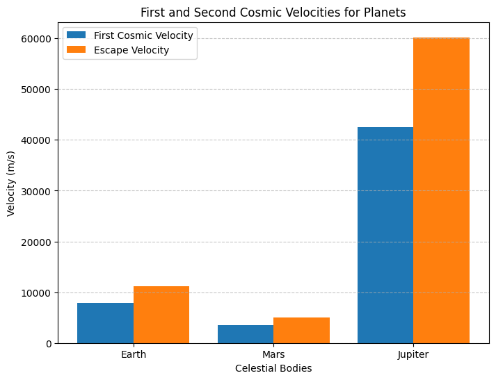
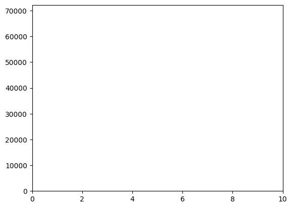

Problem 2
Escape Velocities and Cosmic Velocities
Motivation
The concept of escape velocity is crucial for understanding the conditions required to leave a celestial body's gravitational influence. Extending this concept, the first, second, and third cosmic velocities define the thresholds for orbiting, escaping, and leaving a star system. These principles underpin modern space exploration, from launching satellites to interplanetary missions.
Definitions
First Cosmic Velocity
The first cosmic velocity $$ v_1 $$is the minimum velocity required for an object to maintain a stable circular orbit around a celestial body. It is given by: $$ v_1 = \sqrt{\frac{GM}{R}} $$ where: - $ G $ is the gravitational constant $ 6.674 \times 10^{-11} \, m^3 kg^{-1} s^{-2} $ - $ M $ is the mass of the celestial body - $ R $ is the radius of the celestial body
Second Cosmic Velocity (Escape Velocity)
The second cosmic velocity $ v_2 $ is the minimum velocity required for an object to escape a celestial body's gravitational influence without further propulsion. It is given by: $$ v_2 = \sqrt{2GM/R} $$
Third Cosmic Velocity
The third cosmic velocity $ v_3 $ is the velocity required for an object to escape the Sun's gravitational influence from a given planet’s orbit. It is given by: $$ v_3 = \sqrt{v_2^2 + v_{orb}^2} $$ where $ v_{orb} $ is the orbital velocity of the planet around the Sun.
Calculations for Earth, Mars, and Jupiter
Using standard values: - Earth: $ M = 5.972 \times 10^{24} $ kg, $ R = 6371 $ km - Mars: $ M = 6.417 \times 10^{23} $ kg, $ R = 3389 $ km - Jupiter: $ M = 1.898 \times 10^{27} $ kg, $ R = 69911 $ km
Python Code for Graphs
import numpy as np
import matplotlib.pyplot as plt
# Constants
G = 6.674e-11 # Gravitational constant (m^3 kg^-1 s^-2)
# Celestial bodies data
bodies = {
"Earth": {"M": 5.972e24, "R": 6371e3},
"Mars": {"M": 6.417e23, "R": 3389e3},
"Jupiter": {"M": 1.898e27, "R": 69911e3}
}
# Compute velocities
velocities = {}
for body, data in bodies.items():
M, R = data["M"], data["R"]
v1 = np.sqrt(G * M / R)
v2 = np.sqrt(2 * G * M / R)
velocities[body] = (v1, v2)
# Plot results
labels = list(velocities.keys())
v1_values = [vel[0] for vel in velocities.values()]
v2_values = [vel[1] for vel in velocities.values()]
x = np.arange(len(labels))
width = 0.4
plt.figure(figsize=(8,6))
plt.bar(x - width/2, v1_values, width, label="First Cosmic Velocity")
plt.bar(x + width/2, v2_values, width, label="Escape Velocity")
plt.xlabel("Celestial Bodies")
plt.ylabel("Velocity (m/s)")
plt.xticks(x, labels)
plt.legend()
plt.title("First and Second Cosmic Velocities for Planets")
plt.grid(axis='y', linestyle='--', alpha=0.7)
plt.show()

Python Code for Animation
import matplotlib.animation as animation
fig, ax = plt.subplots()
ax.set_xlim(0, 10)
ax.set_ylim(0, max(v2_values) * 1.2)
line, = ax.plot([], [], 'ro', markersize=8)
def update(frame):
line.set_data(frame, v2_values[frame % len(v2_values)])
return line,
ani = animation.FuncAnimation(fig, update, frames=len(v2_values), interval=1000, repeat=True)
plt.show()

Importance in Space Exploration
- Satellite Deployment: Understanding $ v_1 $ helps engineers design stable satellite orbits.
- Interplanetary Missions: Calculating $ v_2 $ ensures spacecraft can leave planetary influence.
- Interstellar Travel: $ v_3 $ is crucial for designing missions beyond our solar system.